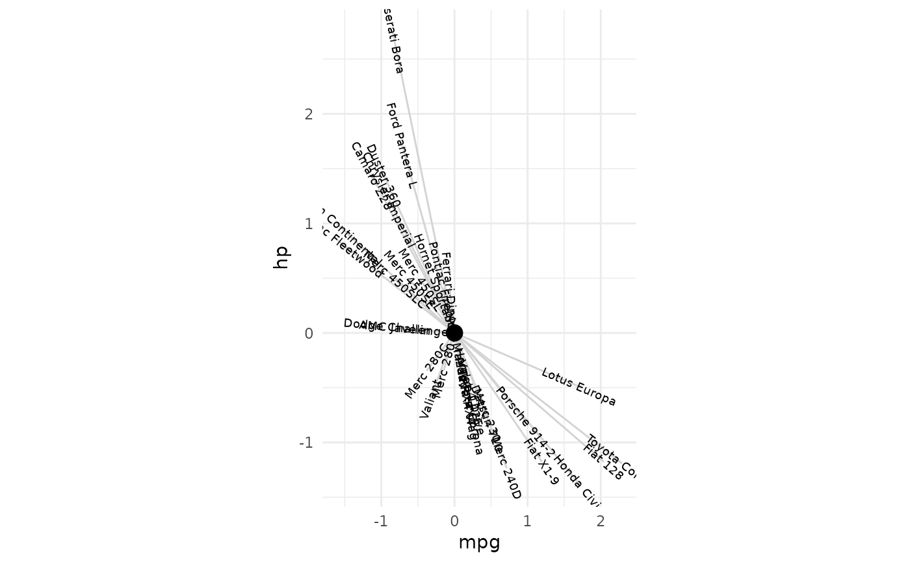
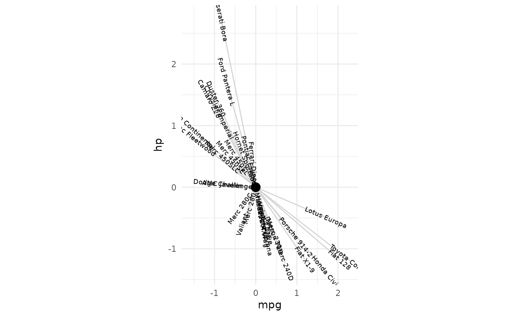

Consider moving these functions to tax_lab_style() man page/.R file.
See functions section.
textAngleCalc(xvec, yvec, max = 90, ratio = 1, perpendicular = FALSE)
textHjustCalc(xvec, adjust = TRUE)Arguments
- xvec
numeric vector of values used for x axis
- yvec
numeric vector of values used for y axis
- max
maximum absolute numeric value of angle in degrees to return (for rotating text/labels)
- ratio
adjustment for aspect ratio of plot when setting a fixed coordinate aspect ratio with coord_fixed (advised)
- adjust
logical, apply hjust or not (FALSE means return only 0.5)
Value
numeric vector representing either angles to rotate geom_text labels, or hjust values
Functions
textAngleCalc(): Calculate rotation of text labels for ordination plottextHjustCalc(): Calculate hjust of text labels for ordination plot
Examples
library(ggplot2)
library(dplyr)
# create basic ggplot for labelling
df <- mtcars %>% mutate(across(everything(), scale))
p <- ggplot(df, aes(mpg, hp, label = rownames(df))) +
geom_segment(xend = 0, yend = 0, color = "lightgrey") +
annotate(x = 0, y = 0, geom = "point", size = 4) +
theme_minimal()
p

# calculate new variable within aes mapping non-standard evaluation
p +
geom_text(size = 2.5, mapping = aes(angle = textAngleCalc(mpg, hp))) +
coord_fixed(ratio = 1)
 # equivalent: calculate variable outside aes by referring to dataframe again
p +
geom_text(size = 2.5, angle = textAngleCalc(df$mpg, df$hp)) +
coord_fixed(ratio = 1)
# equivalent: calculate variable outside aes by referring to dataframe again
p +
geom_text(size = 2.5, angle = textAngleCalc(df$mpg, df$hp)) +
coord_fixed(ratio = 1)
 # fixing aspect ratio is important
# see how angles may be incorrect otherwise
p +
geom_text(size = 2.5, mapping = aes(angle = textAngleCalc(mpg, hp)))
# fixing aspect ratio is important
# see how angles may be incorrect otherwise
p +
geom_text(size = 2.5, mapping = aes(angle = textAngleCalc(mpg, hp)))
 # ratio argument allows matching angles with alternative aspect ratio
p +
geom_text(size = 2.5, angle = textAngleCalc(df$mpg, df$hp, ratio = .5)) +
coord_fixed(ratio = .5)
# ratio argument allows matching angles with alternative aspect ratio
p +
geom_text(size = 2.5, angle = textAngleCalc(df$mpg, df$hp, ratio = .5)) +
coord_fixed(ratio = .5)
 p +
geom_text(size = 2.5, angle = textAngleCalc(df$mpg, df$hp, ratio = 1.5)) +
coord_fixed(ratio = 1.5)

# perpendicular argument makes text perpendicular instead of parallel
p +
geom_text(
check_overlap = TRUE, size = 2.5,
angle = textAngleCalc(df$mpg, df$hp, perpendicular = TRUE, ratio = 1.5)
) +
coord_fixed(ratio = 1.5, clip = "off")
p +
geom_text(size = 2.5, angle = textAngleCalc(df$mpg, df$hp, ratio = 1.5)) +
coord_fixed(ratio = 1.5)

# perpendicular argument makes text perpendicular instead of parallel
p +
geom_text(
check_overlap = TRUE, size = 2.5,
angle = textAngleCalc(df$mpg, df$hp, perpendicular = TRUE, ratio = 1.5)
) +
coord_fixed(ratio = 1.5, clip = "off")
 # max angle limits extreme text angles
p +
geom_text(
size = 2.5, check_overlap = TRUE,
angle = textAngleCalc(df$mpg, df$hp, ratio = 2, max = 10),
hjust = textHjustCalc(xvec = df$mpg, adjust = TRUE)
) +
coord_fixed(ratio = 2, clip = "off")
# max angle limits extreme text angles
p +
geom_text(
size = 2.5, check_overlap = TRUE,
angle = textAngleCalc(df$mpg, df$hp, ratio = 2, max = 10),
hjust = textHjustCalc(xvec = df$mpg, adjust = TRUE)
) +
coord_fixed(ratio = 2, clip = "off")